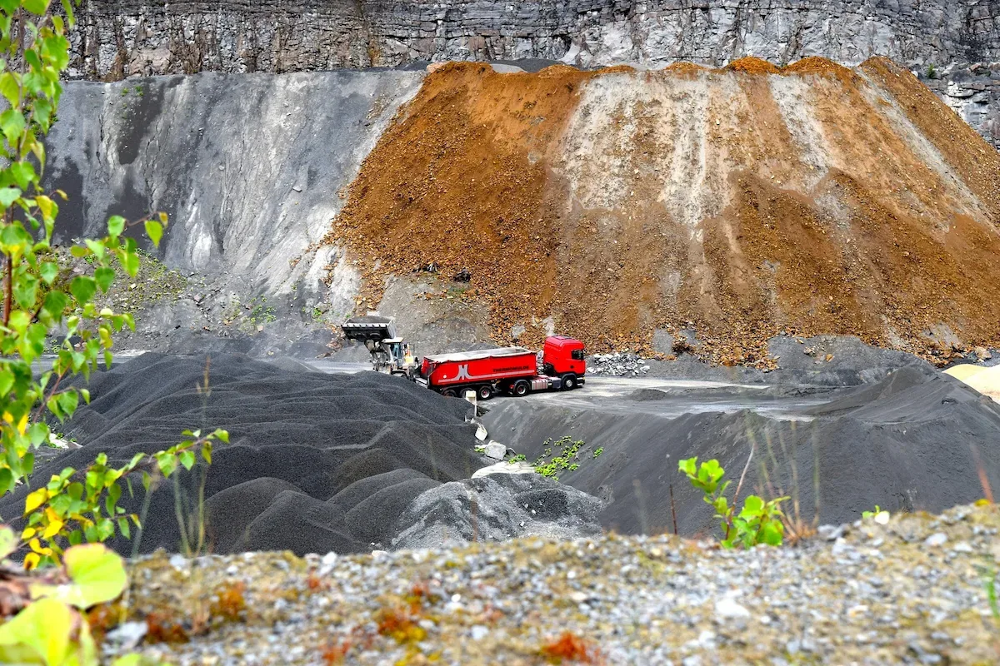
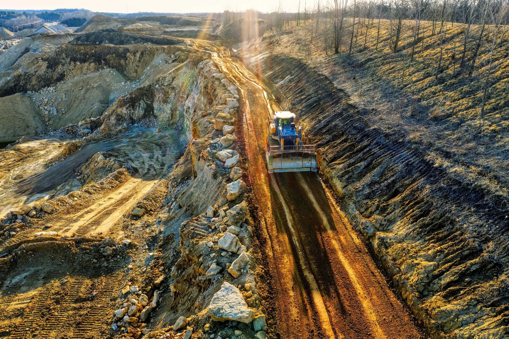

Understand
We listen, assess the site and define the project requirements.
From ground-level execution to large-scale infrastructure, we bring engineering, expertise and commitment together to build projects that stand the test of time.
From earthworks and essential infrastructure to thoughtfully planned developments, our capabilities span projects that shape places and possibilities.

↗Mining and quarry operations built around disciplined site management, dependable equipment and a clear focus on productivity.
 ↗
↗Infrastructure works that bring together planning, coordination and on-ground execution to create durable connections and essential assets.
 ↗
↗Residential development with considered planning, construction quality and a focus on creating enduring places to live.
 ↗
↗Water infrastructure shaped by engineering discipline, coordinated execution and attention to site and structural requirements.
 ↗
↗Water distribution infrastructure designed and delivered to support land, communities and agricultural needs.

Every project starts with understanding the ground beneath it—and the goals ahead. We bring practical expertise, careful planning and hands-on execution to complex work.
Discover JP Infra ↗A clear, considered process keeps our work purposeful—from the first conversation to project delivery.
We listen, assess the site and define the project requirements.
We align scope, resources, timelines and the practical path forward.
We coordinate people and work with a focus on quality and safety.
We complete with accountability and attention to lasting value.